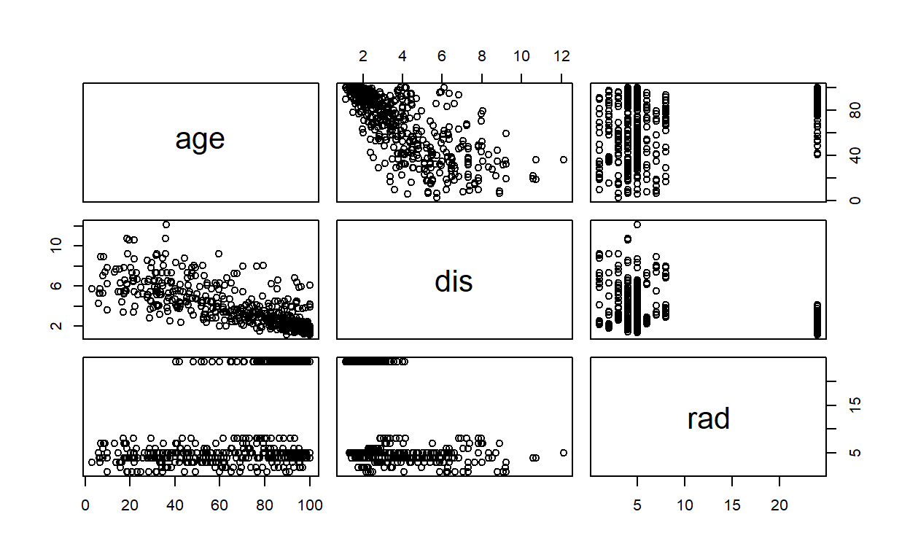

Question 2. Exercise 1.
For each of parts (a) through (d), indicate whether we would generally expect the performance of a flexible statistical learning method to be better or worse than an inflexible method. Justify your answer.
(a)
The sample size n is extremely large, and the number of predictors p is small.
I would expect it to be better, as flexible models require lots of more data. So a large n would be beneficial for a flexible model.
(b)
The number of predictors p is extremely large, and the number of observations n is small.
For this I would recommend a more rigid model with the small n. The large number of p is also worrying for a flexible model. As shown in the text book in figure 2.6, large amount of predictors can cause the model to overfit.
(c)
The relationship between the predictors and response is highly non-linear.
I would expect a better performance form a flexible model. Lasso and least squares run better on linear data, which means the more flexible models will perform better.
(d)
The variance of the error terms, i.e. σ2 = Var(ϵ), is extremely high.
High Variance means we will have a lot of points above and below the line of best fit. If we were to use a more flexible model, we would see something similar to the high predictors p, overfitting. So a more flexible model would perform worse.
ISLR Ch. 2, exercise 2
Explain whether each scenario is a classification or regression problem, and indicate whether we are most interested in inference or prediction. Finally, provide n and p.
(a)
We collect a set of data on the top 500 firms in the US. For each firm we record profit, number of employees, industry and the CEO salary. We are interested in understanding which factors affect CEO salary.
n = # of firms, 500 p = profit, # of employees, industry Regression Inference
This is a regression problem. We are not trying to classify the CEO salary into bands, or group the company salarys to similar ones. We are trying to understand how these predictors correlate to the dependent variable, CEO salary. We are most interested in inference.
(b)
We are considering launching a new product and wish to know whether it will be a success or a failure. We collect data on 20 similar products that were previously launched. For each product we have recorded whether it was a success or failure, price charged for the product, marketing budget, competition price, and ten other variables.
n = # of products, 20 p = price, marketing budget, competition price, ten other variables Classification Prediction
This is a classification problem. We are trying to learn from the predictors to label a product as a success or failure. If we were trying to predict the probalitlity of success and failure, then I believe that would be a logit regression. We are most interested in prediction.
(c)
We are interested in predicting the % change in the USD/Euro exchange rate in relation to the weekly changes in the world stock markets. Hence we collect weekly data for all of 2012. For each week we record the % change in the USD/Euro, the % change in the US market, the % change in the British market, and the % change in the German market.
n = # of weeks recorded, 1 year, 52 p = % change of us, british and german market
This is a regression problem. We are trying to predict a number based on predictors. This is a prediciton problem.
ISLR Ch. 2, exercise 7
The table below provides a training data set containing six
observations, three predictors, and one qualitative response variable.

Suppose we wish to use this data set to make a prediction for Y when X1 = X2 = X3 = 0 using K-nearest neighbors.
(a)
Compute the Euclidean distance between each observation and the test point, X1 = X2 = X3 = 0.
dist<- function(x,y,z){
distance <- (x^2+y^2+z^2)^(1/2)
}
o1<- dist(0,3,0)
o2 <- dist(2,0,0)
o3<- dist(0,1,3)
o4<- dist(0,1,2)
o5 <- dist(-1,0,1)
o6 <- dist(1,1,1)
cbind(o1,o2, o3,o4,o5,o6)
o1 o2 o3 o4 o5 o6
[1,] 3 2 3.162278 2.236068 1.414214 1.732051(b)
What is our prediction with K = 1? Why?
If we use K =1, then the nearest observation from 0,0,0 is the green observation at -1,0,1.
Predict Green.
(c)
What is our prediction with K = 3? Why?
We would use observations 2, 5, and 6 as they are the closest to the center point. These are red, green, and red. So, we would predict red.
- If the Bayes decision boundary in this problem is highly nonlinear, then would we expect the best value for K to be large or small? Why?
As the K value becomes large, we expect the model to become more linear. So a smaller K would work better for a highly nonlinear model.
ISLR Ch. 2, exercise 10
This exercise involves the Boston housing data set. ##### (a) To begin, load in the Boston data set. The Boston data set is part of the ISLR2 library.
crim zn indus chas nox rm age dis rad tax ptratio lstat
1 0.00632 18 2.31 0 0.538 6.575 65.2 4.0900 1 296 15.3 4.98
2 0.02731 0 7.07 0 0.469 6.421 78.9 4.9671 2 242 17.8 9.14
3 0.02729 0 7.07 0 0.469 7.185 61.1 4.9671 2 242 17.8 4.03
4 0.03237 0 2.18 0 0.458 6.998 45.8 6.0622 3 222 18.7 2.94
5 0.06905 0 2.18 0 0.458 7.147 54.2 6.0622 3 222 18.7 5.33
6 0.02985 0 2.18 0 0.458 6.430 58.7 6.0622 3 222 18.7 5.21
medv
1 24.0
2 21.6
3 34.7
4 33.4
5 36.2
6 28.7#?Boston
How many rows are in this data set? How many columns? What do the rows and columns represent?
dim(Boston)
[1] 506 13colnames(Boston)
[1] "crim" "zn" "indus" "chas" "nox" "rm"
[7] "age" "dis" "rad" "tax" "ptratio" "lstat"
[13] "medv" #head(Boston)
506 Rows of suburbs in Boston. 14 Predictors (columns)
Each row is a case.
(b)
Make some pairwise scatterplots of the predictors (columns) in this data set. Describe your findings.
pairs(Boston)
Initial Plot is hard to interpret. Lets trim down to these variables.
columns <- colnames(Boston)
x = 0
group = NULL
for(i in columns){
#print(i)
x <- x+1
#print(x)
group <- cbind(group,i)
if(x%%3 == 0){
#print(x)
#pairs(group)
#print(group)
df <- Boston[,colnames(Boston) %in% group]
pairs(df)
group <- NULL
}
}

Possible Correlation between Age and dis, Zn and indus and possibly nox an rm.
(c)
Are any of the predictors associated with per capita crime rate? If so, explain the relationship. Lets try using the cor function.
crim zn indus chas nox rm
crim 1 -0.2004692 0.4065834 -0.05589158 0.4209717 -0.2192467
age dis rad tax ptratio lstat
crim 0.3527343 -0.3796701 0.6255051 0.5827643 0.2899456 0.4556215
medv
crim -0.3883046Crim has the highest correlations with indus at .41, nox at .42, rad at .625, tax at .58, and lstat at .455. The two highes are lstat, and rad.
(d)
Do any of the census tracts of Boston appear to have particularly high crime rates? Tax rates? Pupil-teacher ratios? Comment on the range of each predictor.
summary(Boston)
crim zn indus
Min. : 0.00632 Min. : 0.00 Min. : 0.46
1st Qu.: 0.08205 1st Qu.: 0.00 1st Qu.: 5.19
Median : 0.25651 Median : 0.00 Median : 9.69
Mean : 3.61352 Mean : 11.36 Mean :11.14
3rd Qu.: 3.67708 3rd Qu.: 12.50 3rd Qu.:18.10
Max. :88.97620 Max. :100.00 Max. :27.74
chas nox rm age
Min. :0.00000 Min. :0.3850 Min. :3.561 Min. : 2.90
1st Qu.:0.00000 1st Qu.:0.4490 1st Qu.:5.886 1st Qu.: 45.02
Median :0.00000 Median :0.5380 Median :6.208 Median : 77.50
Mean :0.06917 Mean :0.5547 Mean :6.285 Mean : 68.57
3rd Qu.:0.00000 3rd Qu.:0.6240 3rd Qu.:6.623 3rd Qu.: 94.08
Max. :1.00000 Max. :0.8710 Max. :8.780 Max. :100.00
dis rad tax ptratio
Min. : 1.130 Min. : 1.000 Min. :187.0 Min. :12.60
1st Qu.: 2.100 1st Qu.: 4.000 1st Qu.:279.0 1st Qu.:17.40
Median : 3.207 Median : 5.000 Median :330.0 Median :19.05
Mean : 3.795 Mean : 9.549 Mean :408.2 Mean :18.46
3rd Qu.: 5.188 3rd Qu.:24.000 3rd Qu.:666.0 3rd Qu.:20.20
Max. :12.127 Max. :24.000 Max. :711.0 Max. :22.00
lstat medv
Min. : 1.73 Min. : 5.00
1st Qu.: 6.95 1st Qu.:17.02
Median :11.36 Median :21.20
Mean :12.65 Mean :22.53
3rd Qu.:16.95 3rd Qu.:25.00
Max. :37.97 Max. :50.00 The max crime rate is at 88% with a min at .006%. The crime rate data is heavily skewed by outliers, this can be seen by the very low median and a very high mean. The range of tax rates are from 187 per $10000 to 711. The pupil teacher ratio has a mean of 18.46 and a min of 12.6 and a max of 22.
(e)
How many of the census tracts in this data set bound the Charles river?
head(Boston)
crim zn indus chas nox rm age dis rad tax ptratio lstat
1 0.00632 18 2.31 0 0.538 6.575 65.2 4.0900 1 296 15.3 4.98
2 0.02731 0 7.07 0 0.469 6.421 78.9 4.9671 2 242 17.8 9.14
3 0.02729 0 7.07 0 0.469 7.185 61.1 4.9671 2 242 17.8 4.03
4 0.03237 0 2.18 0 0.458 6.998 45.8 6.0622 3 222 18.7 2.94
5 0.06905 0 2.18 0 0.458 7.147 54.2 6.0622 3 222 18.7 5.33
6 0.02985 0 2.18 0 0.458 6.430 58.7 6.0622 3 222 18.7 5.21
medv
1 24.0
2 21.6
3 34.7
4 33.4
5 36.2
6 28.7[1] 35 13There are 35 census tracts bound by the charles river.
(f)
What is the median pupil-teacher ratio among the towns in this data set?
median(Boston$ptratio)
[1] 19.05summary(Boston$ptratio)
Min. 1st Qu. Median Mean 3rd Qu. Max.
12.60 17.40 19.05 18.46 20.20 22.00 The Median pratio is 19.05.
(g)
Which census tract of Boston has lowest median value of owneroccupied homes? What are the values of the other predictors for that census tract, and how do those values compare to the overall ranges for those predictors? Comment on your findings.
# 2 census tracts with lowest median value of owner occupied homes
Boston %>% arrange(medv) %>% slice(1:2)
crim zn indus chas nox rm age dis rad tax ptratio lstat
1 38.3518 0 18.1 0 0.693 5.453 100 1.4896 24 666 20.2 30.59
2 67.9208 0 18.1 0 0.693 5.683 100 1.4254 24 666 20.2 22.98
medv
1 5
2 5I found 2 census tracts with the lowest median value of owner occupied homes at 5. The crime rates were relatively high at 38 and 67. The tax rates were also very high in this area, which is surprising with a very low median home value. Age also seems to be maxed out for these at the 100 value. So these are highly taxed, very old houses, with a high crime rate.
(h)
In this data set, how many of the census tracts average more than seven rooms per dwelling? More than eight rooms per dwelling? Comment on the census tracts that average more than eight rooms per dwelling.
[1] 64 13[1] 13 13 crim zn indus chas
Min. :0.02009 Min. : 0.00 Min. : 2.680 Min. :0.0000
1st Qu.:0.33147 1st Qu.: 0.00 1st Qu.: 3.970 1st Qu.:0.0000
Median :0.52014 Median : 0.00 Median : 6.200 Median :0.0000
Mean :0.71879 Mean :13.62 Mean : 7.078 Mean :0.1538
3rd Qu.:0.57834 3rd Qu.:20.00 3rd Qu.: 6.200 3rd Qu.:0.0000
Max. :3.47428 Max. :95.00 Max. :19.580 Max. :1.0000
nox rm age dis
Min. :0.4161 Min. :8.034 Min. : 8.40 Min. :1.801
1st Qu.:0.5040 1st Qu.:8.247 1st Qu.:70.40 1st Qu.:2.288
Median :0.5070 Median :8.297 Median :78.30 Median :2.894
Mean :0.5392 Mean :8.349 Mean :71.54 Mean :3.430
3rd Qu.:0.6050 3rd Qu.:8.398 3rd Qu.:86.50 3rd Qu.:3.652
Max. :0.7180 Max. :8.780 Max. :93.90 Max. :8.907
rad tax ptratio lstat
Min. : 2.000 Min. :224.0 Min. :13.00 Min. :2.47
1st Qu.: 5.000 1st Qu.:264.0 1st Qu.:14.70 1st Qu.:3.32
Median : 7.000 Median :307.0 Median :17.40 Median :4.14
Mean : 7.462 Mean :325.1 Mean :16.36 Mean :4.31
3rd Qu.: 8.000 3rd Qu.:307.0 3rd Qu.:17.40 3rd Qu.:5.12
Max. :24.000 Max. :666.0 Max. :20.20 Max. :7.44
medv
Min. :21.9
1st Qu.:41.7
Median :48.3
Mean :44.2
3rd Qu.:50.0
Max. :50.0 There are 64 census tracts that are 7 or more rooms per dwelling, but only 13 with 8 or more rooms per dwelling. For the 13 dwellings with 8 or mor rooms per dweling I saw the following statistics: - max crime rate of 3.4, mean of .718 -max lstat of 7.44, mean of 4.3 - max mdv value of 50, average of 44
These seem to be a safer neighborhood, with a higher status and more expensive homes.
ISLR Ch. 3, exercise 1
Describe the null hypotheses to which the p-values given in Table 3.4 correspond. Explain what conclusions you can draw based on these p-values. Your explanation should be phrased in terms of sales, TV, radio, and newspaper, rather than in terms of the coefficients of the linear model.

All independent variables =0. Alternative hypothesis - at least one independent variable is non-zero.
TV and radio are both statistically significant, which means the null hypothesis can be rejected. We can assume there is some correlation between TV and Radio. Newspaper’s pvalue is above .05 which means the independent variable is not statistically significant. Which means we accept the null hypothesis, and there is no correlation between newspaper and sales.
ISLR Ch. 3, exercise 3
Suppose we have a data set with five predictors, X1 = GPA, X2 =IQ, X3 = Level (1 for College and 0 for High School), X4 = Interaction between GPA and IQ, and X5 = Interaction between GPA and Level. The response is starting salary after graduation (in thousands of dollars). Suppose we use least squares to fit the model, and get βˆ0 = 50, βˆ1 = 20, βˆ2 = 0.07, βˆ3 = 35, βˆ4 = 0.01, βˆ5 = −10.
Salary = 50 + GPA * 20 + IQ +.07 + Level * 35 + .01 * GPA:IQ -10 * GPA:Level ##### (a) Which answer is correct, and why?
i.
For a fixed value of IQ and GPA, high school graduates earn more, on average, than college graduates.
fixed iq and gpa iq, gpa = 1 S = 70.08 + level* 35 -10 * level
College = 1 highschool = 0
college - S = 70.08 +35 - 10 Highschool - S = 70
This one is not true.
ii.
For a fixed value of IQ and GPA, college graduates earn more, on average, than high school graduates.
This one is true based on the logic from above. On average, assuming that iq and GPA = 1. College grads will earch 20 thousand dollars more.
iii.
For a fixed value of IQ and GPA, high school graduates earn more, on average, than college graduates provided that the GPA is high enough.
This one is wrong.
iv.
For a fixed value of IQ and GPA, college graduates earn more, on average, than high school graduates provided that the GPA is high enough.
This one is wrong.
(b)
Predict the salary of a college graduate with IQ of 110 and a GPA of 4.0.
GPA = 4
IQ =110
Level = 1
Salary = 50 + GPA * 20 + IQ +.07 + Level * 35 + .01 * GPA*IQ -10 * GPA*Level
Salary
[1] 239.47Salary = 239K
(c)
True or false: Since the coefficient for the GPA/IQ interaction term is very small, there is very little evidence of an interaction effect. Justify your answer.
This is false. .01 is a relative term. for the problem above we had an IQ of 110. GPA ranging from 1 - 4 would give the range of 1.1K to 4.4 K.
ISLR Ch. 3, exercise 15
This problem involves the Boston data set, which we saw in the lab for this chapter. We will now try to predict per capita crime rate using the other variables in this data set. In other words, per capita crime rate is the response, and the other variables are the predictors.
(a)
For each predictor, fit a simple linear regression model to predict the response. Describe your results. In which of the models is there a statistically significant association between the predictor and the response? Create some plots to back up your assertions.
Predict Crime Rate
#Boston
#colnames(Boston)
Dependent_variable <- Boston %>% dplyr::select(crim)
predictors <- Boston %>% dplyr::select(-crim)
#Dependent_variable %>% head()
#predictors %>% head()
predictors_varname <- colnames(predictors)
outcome <- "crim"
models <- lapply(paste(outcome," ~", predictors_varname), as.formula)
y <- NULL
for (model in models){
linearmodel <- lm(model, data = Boston)
x <- summary(linearmodel)
print(x$coefficients)
#print(paste(format(model), "R^2 value: ", round(x$r.squared,3)*100, "%"))
y <- rbind(y, data.frame(variable = as.character(model[3]),
"Rvalue_Percent" = round(x$r.squared,3)*100))
}
Estimate Std. Error t value Pr(>|t|)
(Intercept) 4.45369376 0.4172178 10.674746 4.037668e-24
zn -0.07393498 0.0160946 -4.593776 5.506472e-06
Estimate Std. Error t value Pr(>|t|)
(Intercept) -2.0637426 0.66722830 -3.093008 2.091266e-03
indus 0.5097763 0.05102433 9.990848 1.450349e-21
Estimate Std. Error t value Pr(>|t|)
(Intercept) 3.744447 0.3961111 9.453021 1.239505e-19
chas -1.892777 1.5061155 -1.256727 2.094345e-01
Estimate Std. Error t value Pr(>|t|)
(Intercept) -13.71988 1.699479 -8.072992 5.076814e-15
nox 31.24853 2.999190 10.418989 3.751739e-23
Estimate Std. Error t value Pr(>|t|)
(Intercept) 20.481804 3.3644742 6.087669 2.272000e-09
rm -2.684051 0.5320411 -5.044819 6.346703e-07
Estimate Std. Error t value Pr(>|t|)
(Intercept) -3.7779063 0.94398472 -4.002084 7.221718e-05
age 0.1077862 0.01273644 8.462825 2.854869e-16
Estimate Std. Error t value Pr(>|t|)
(Intercept) 9.499262 0.7303972 13.005611 1.502748e-33
dis -1.550902 0.1683300 -9.213458 8.519949e-19
Estimate Std. Error t value Pr(>|t|)
(Intercept) -2.2871594 0.44347583 -5.157349 3.605846e-07
rad 0.6179109 0.03433182 17.998199 2.693844e-56
Estimate Std. Error t value Pr(>|t|)
(Intercept) -8.52836909 0.815809392 -10.45387 2.773600e-23
tax 0.02974225 0.001847415 16.09939 2.357127e-47
Estimate Std. Error t value Pr(>|t|)
(Intercept) -17.646933 3.1472718 -5.607057 3.395255e-08
ptratio 1.151983 0.1693736 6.801430 2.942922e-11
Estimate Std. Error t value Pr(>|t|)
(Intercept) -3.3305381 0.69375829 -4.800718 2.087022e-06
lstat 0.5488048 0.04776097 11.490654 2.654277e-27
Estimate Std. Error t value Pr(>|t|)
(Intercept) 11.7965358 0.93418916 12.62757 5.934119e-32
medv -0.3631599 0.03839017 -9.45971 1.173987e-19 variable Rvalue_Percent
1 rad 39.1
2 tax 34.0
3 lstat 20.8
4 nox 17.7
5 indus 16.5
6 medv 15.1
7 dis 14.4
8 age 12.4
9 ptratio 8.4
10 rm 4.8
11 zn 4.0
12 chas 0.3When predicting crime I found the following predictors statistically significant: - indus - zn - medv - lstat - pratio - tax - rad - dis - age - rm -nox
The only one not statistically significant is nox.
(b)
Fit a multiple regression model to predict the response using all of the predictors. Describe your results. For which predictors can we reject the null hypothesis H0 : βj = 0?
Call:
lm(formula = crim ~ ., data = Boston)
Residuals:
Min 1Q Median 3Q Max
-8.534 -2.248 -0.348 1.087 73.923
Coefficients:
Estimate Std. Error t value Pr(>|t|)
(Intercept) 13.7783938 7.0818258 1.946 0.052271 .
zn 0.0457100 0.0187903 2.433 0.015344 *
indus -0.0583501 0.0836351 -0.698 0.485709
chas -0.8253776 1.1833963 -0.697 0.485841
nox -9.9575865 5.2898242 -1.882 0.060370 .
rm 0.6289107 0.6070924 1.036 0.300738
age -0.0008483 0.0179482 -0.047 0.962323
dis -1.0122467 0.2824676 -3.584 0.000373 ***
rad 0.6124653 0.0875358 6.997 8.59e-12 ***
tax -0.0037756 0.0051723 -0.730 0.465757
ptratio -0.3040728 0.1863598 -1.632 0.103393
lstat 0.1388006 0.0757213 1.833 0.067398 .
medv -0.2200564 0.0598240 -3.678 0.000261 ***
---
Signif. codes: 0 '***' 0.001 '**' 0.01 '*' 0.05 '.' 0.1 ' ' 1
Residual standard error: 6.46 on 493 degrees of freedom
Multiple R-squared: 0.4493, Adjusted R-squared: 0.4359
F-statistic: 33.52 on 12 and 493 DF, p-value: < 2.2e-16For zn, dis, rad, and medv we can reject the null hypothesis that Beta = 0, as there is statistically significance and correlation between those variables and crime rate.
(c)
How do your results from (a) compare to your results from (b)? Create a plot displaying the univariate regression coefficients from (a) on the x-axis, and the multiple regression coefficients from (b) on the y-axis. That is, each predictor is displayed as a single point in the plot. Its coefficient in a simple linear regression model is shown on the x-axis, and its coefficient estimate in the multiple linear regression model is shown on the y-axis.
First step is gathering the coefficients from each model.
multiple <- lm(data = Boston, crim ~ .)
x <- summary(multiple)
multi_coef <- data.frame(multi_coef = x$coefficients[2:13,1])
#multi_coef
#now need coefficients from previous models
outcome <- "crim"
models <- lapply(paste(outcome," ~", predictors_varname), as.formula)
coef_matrix <- NULL
for (model in models){
linearmodel <- lm(model, data = Boston)
x <- summary(linearmodel)
#print(x$coefficients[2,4])
coef_matrix <- rbind(coef_matrix, data.frame(predictor = as.character(model[3]),
coef = x$coefficients[2,1]))
}
#multi_coef
#coef_matrix
plot(coef_matrix$coef,multi_coef$multi_coef, xlab = "Univariate Coefficients", ylab = "multiple regression coefficients")
(d)
Is there evidence of non-linear association between any of the predictors and the response? To answer this question, for each predictor X, fit a model of the form Y = β0 + β1X + β2X2 + β3X3 + ϵ.
zn indus chas nox rm age dis
2.323944 3.983627 1.093242 4.546642 2.201688 3.088678 4.280979
rad tax ptratio lstat medv
7.029796 9.195493 1.969732 3.538098 3.663205 Possible non-linearity due to tax, and may rad.
Another way to look into this is using the ploy function for each coefficient.
#practice
lm.poly <- lm(data = Boston, crim ~ poly(lstat,5))
z <- summary(lm.poly)
#data.frame(z$coefficients)
#Boston %>% colnames()
(lm.poly <- lm(data = Boston, crim ~ poly(lstat,5))) %>% summary()
Call:
lm(formula = crim ~ poly(lstat, 5), data = Boston)
Residuals:
Min 1Q Median 3Q Max
-13.682 -1.848 -0.547 -0.049 82.707
Coefficients:
Estimate Std. Error t value Pr(>|t|)
(Intercept) 3.6135 0.3368 10.729 <2e-16 ***
poly(lstat, 5)1 88.0697 7.5758 11.625 <2e-16 ***
poly(lstat, 5)2 15.8882 7.5758 2.097 0.0365 *
poly(lstat, 5)3 -11.5740 7.5758 -1.528 0.1272
poly(lstat, 5)4 15.5158 7.5758 2.048 0.0411 *
poly(lstat, 5)5 16.8403 7.5758 2.223 0.0267 *
---
Signif. codes: 0 '***' 0.001 '**' 0.01 '*' 0.05 '.' 0.1 ' ' 1
Residual standard error: 7.576 on 500 degrees of freedom
Multiple R-squared: 0.232, Adjusted R-squared: 0.2243
F-statistic: 30.2 on 5 and 500 DF, p-value: < 2.2e-16#(lm.poly <- lm(data = Boston, crim ~ poly(zn,5))) %>% summary()
#(lm.poly <- lm(data = Boston, crim ~ poly(indus,5))) %>% summary()
#lm.poly <- lm(data = Boston, crim ~ poly(chas,2)) Won't let me run poly
#(lm.poly <- lm(data = Boston, crim ~ poly(nox,5))) %>% summary()
#(lm.poly <- lm(data = Boston, crim ~ poly(rm,5))) %>% summary()
#(lm.poly <- lm(data = Boston, crim ~ poly(age,5)))%>% summary()
#(lm.poly <- lm(data = Boston, crim ~ poly(dis,5))) %>% summary()
#(lm.poly <- lm(data = Boston, crim ~ poly(rad,5))) %>% summary()
#(lm.poly <- lm(data = Boston, crim ~ poly(tax,5)))%>% summary()
#(lm.poly <- lm(data = Boston, crim ~ poly(ptratio,5)))%>% summary()
#(lm.poly <- lm(data = Boston, crim ~ poly(black,5))) %>% summary()
#(lm.poly <- lm(data = Boston, crim ~ poly(medv,5))) %>% summary()
I originally ran the summar on each model using the polystat. I then commented the code after, since there is no need to have 14 summarys in a row on the html document.
Using Polystat, and observing the pvalues, here are the results : - lstat is linear - zn is linear, but could be quadratic - indus is statistically significant for 1,2,and 3 degrees -nox is nonlinear, with the 3 degree being the most significant -rm is linear -medv may be non linear
ISLR Ch. 4, exercise 4
When the number of features p is large, there tends to be a deterioration in the performance of KNN and other local approaches that perform prediction using only observations that are near the test observation for which a prediction must be made. This phenomenon is known as the curse of dimensionality, and it ties into the fact that curse of dimensionality non-parametric approaches often perform poorly when p is large. We will now investigate this curse.
(a) Instructors answer via Piazza helped answer this problem.
Suppose that we have a set of observations, each with measurements on p = 1 feature, X. We assume that X is uniformly (evenly) distributed on [0, 1]. Associated with each observationis a response value. Suppose that we wish to predict a test observation’s response using only observations that are within 10 % of the range of X closest to that test observation. For instance, inorder to predict the response for a test observation with X = 0.6, we will use observations in the range [0.55, 0.65]. On average, what fraction of the available observations will we use to make the prediction?
– p =1, x uniformly distributed Observations are in the range of .55 to .65. This means that observations .45 to .55 is just as likely. .65 -.55 = .1. 1/10 of the available observations we will use to make the predcition.
B - Aanchal Setia from Piazza discussion
Now suppose that we have a set of observations, each with measurements on p = 2 features, X1 and X2. We assume that (X1, X2) are uniformly distributed on [0, 1] × [0, 1]. We wish to predict a test observation’s response using only observations that are within 10 % of the range of X1 and within 10 % of the range of X2 closest to that test observation. For instance, in order to predict the response for a test observation with X1 = 0.6 and X2 = 0.35, we will use observations in the range [0.55, 0.65] for X1 and in the range [0.3, 0.4] for X2. On average, what fraction of the available observations will we use to make the prediction?
For x1 we will use 10% range, and for x2 we will also use a 10% range.Therefore, on average we will have 10% of 10% of observations.
.1*.1
[1] 0.01C
Now suppose that we have a set of observations on p = 100 features. Again the observations are uniformly distributed on each feature, and again each feature ranges in value from 0 to 1. We wish to predict a test observation’s response using observations within the 10 % of each feature’s range that is closest to that test observation. What fraction of the available observations will we use to make the prediction?
P = 100 , range 0 to 1. Assuming that each response is using the 10% range p = 1 — .1 p =2 —- .1.1 p = 3 —- .1 .1 *.1 p = n —- .1^n
p = 100
.1^p
[1] 1e-100There 1 E-100 of the available observations will be used to make the prediction.
D
Using your answers to parts (a)–(c), argue that a drawback of KNN when p is large is that there are very few training observations “near” any given test observation.
Based on the above results, if we have 100 features, we would need an extremely large data set to get point that are with in the 10% range of each other.
ISLR Ch. 4, exercise 6
Suppose we collect data for a group of students in a statistics class with variables X1 = hours studied, X2 = undergrad GPA, and Y = receive an A. We fit a logistic regression and produce estimated coefficient, βˆ0 = −6, βˆ1 = 0.05, βˆ2 = 1.
(a)
Estimate the probability that a student who studies for 40 h and has an undergrad GPA of 3.5 gets an A in the class.

b_0 = -6
b_1 = .05
b_2 = 1
x1 = 40
x2 = 3.5
prob = exp(b_0+b_1*x1+b_2*x2)/(1+exp(b_0+b_1*x1*1+b_2*x2))
prob
[1] 0.3775407There is a 37% probablity of receiving an A in this class assuming a 3.5 gpa and 40 hours of studying.
(b)
How many hours would the student in part (a) need to study to have a 50 % chance of getting an A in the class?
Manipulate the above equaiton to solve for x1.

b_0 = -6
b_1 = .05
b_2 = 1
prob = .5
x2 = 3.5
x1 = (log(prob/(1-prob))- b_0 - b_2*x2)/b_1
x1
[1] 50Assuming the 3.5 gpa, we will need to study 50 hours to have a probability of getting an A at 50%.
ISLR Ch. 4, exercise 9
This problem has to do with odds.
(a)
On average, what fraction of people with an odds of 0.37 of defaulting on their credit card payment will in fact default?
Odds = P(X)/1-P(X)
odds* (1-P(X)) = P(x)
odds -
odds*p(x) = P(x)
odds = p(x)(1+odds)
p(x) =
odds/(1+odds)
odds = .37
x = odds/(1+odds)
x
[1] 0.270073.27 of people with an odds of .37 will default
(b)
Suppose that an individual has a 16 % chance of defaulting on her credit card payment. What are the odds that she will default? P(x) = .16 odds = P(x)/(1-P(x))
x = .16
odds = x/(1-x)
odds
[1] 0.190476216 % of the people with an odds of .19 will default.